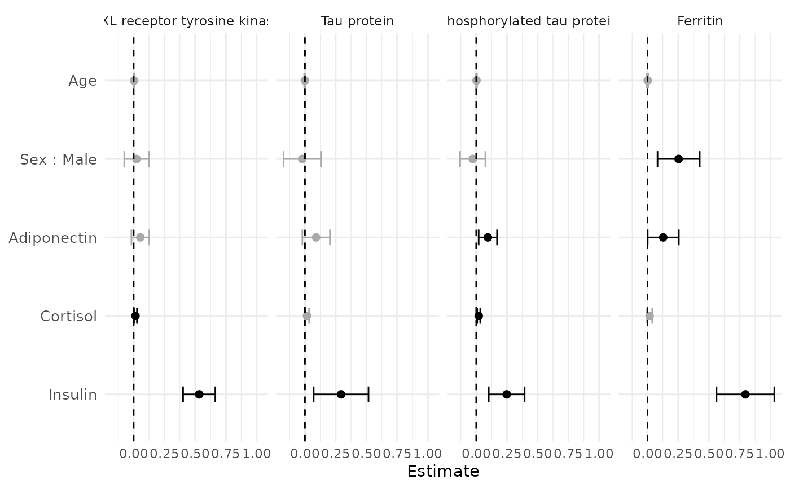
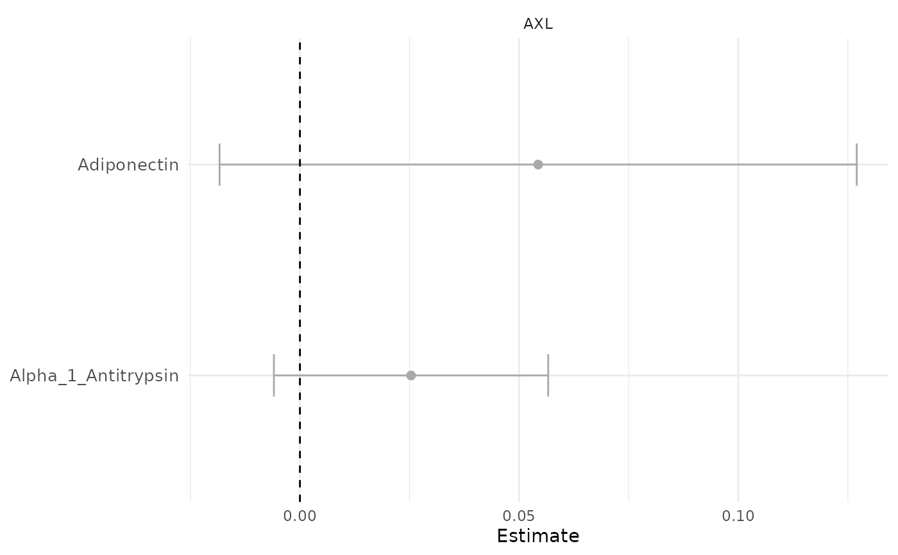

Create a Forest Plot from Univariate Regression Tables
Source:R/PlotForestFromTable.R
PlotForestFromTable.RdThis function generates a forest plot from the results of
MakeUnivariateRegressionTable().
plotForestFromTable() was renamed to PlotForestFromTable()
in SciDataReportR 20.5.0 to match the package's Plot* naming
convention. It remains available as a backwards-compatible synonym.
Usage
PlotForestFromTable(UnivariateRegressionTables, pSize = 2, Flip = FALSE)
plotForestFromTable(UnivariateRegressionTables, pSize = 2, Flip = FALSE)Arguments
- UnivariateRegressionTables
Either the full list returned by
MakeUnivariateRegressionTable()(itsResultsdataframe is used directly), or a dataframe with theResultscolumns. Passing a dataframe lets you filter, reorder, or relabelResultsbefore plotting; required columns areOutcomeLabel,TermLabel,Estimate,ConfLow,ConfHigh, andPValue(SignificantandReferenceValueare recomputed if absent). Lists created by older package versions (without aResultselement) are still supported.- pSize
Numeric. Size of the points in the plot. Default is 2.
- Flip
Logical. If
FALSE, outcomes are facets and predictors/terms are rows. IfTRUE, predictors/terms are facets and outcomes are rows.
Examples
# \donttest{
data(SampleData)
# Build univariate regression tables to plot
urt <- MakeUnivariateRegressionTable(
data = SampleData,
outcome_vars = "AXL",
predictor_vars = c("age", "Adiponectin", "Alpha_1_Antitrypsin")
)
PlotForestFromTable(urt)

# Or plot a filtered subset of the results
PlotForestFromTable(subset(urt$Results, Predictor != "age"))

# }